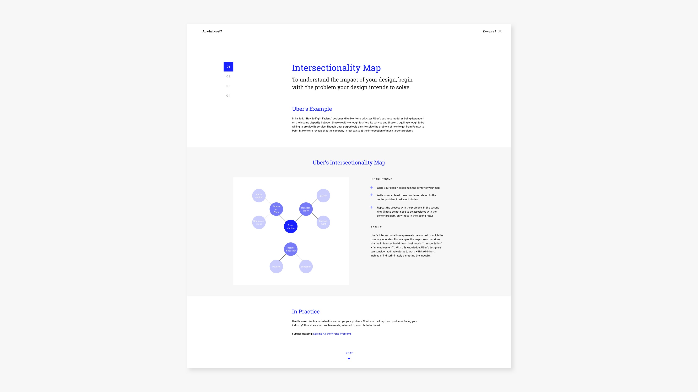
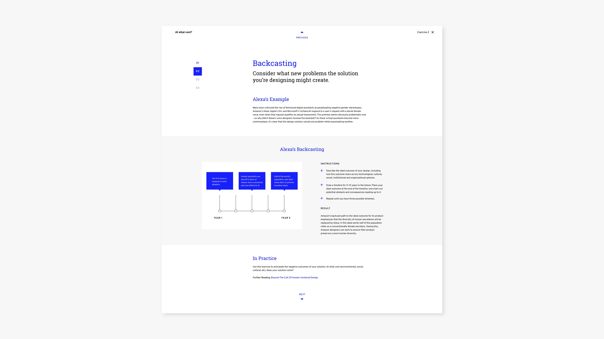
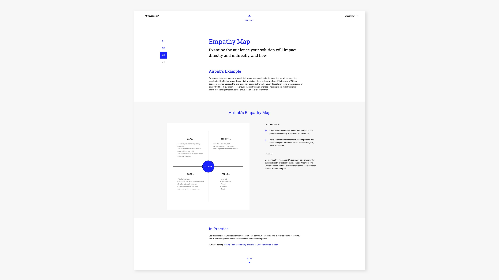
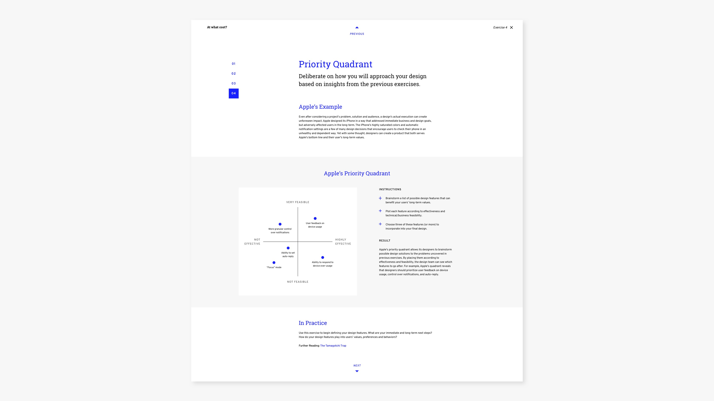

Exercise 1: Intersectionality map

Exercise 2: Backcasting

Exercise 3: Empathy map

My Role
Dates
Live Site
Ethics in design is a profound and messy topic. Most designers didn’t study or train in ethics, and many don’t recognize the responsibility that their job entails. And even for those who do, it can be hard to know how to implement ethical practices in day-to-day work, or how to convince other team members to care.
After reading a lot about ethics in design, I decided to narrow my focus to four real-world examples of this issue. Each example includes an exercise that could have helped the designer in that situation to create a more ethical design. In this way, visitors to the site have actionable steps to follow in their work.